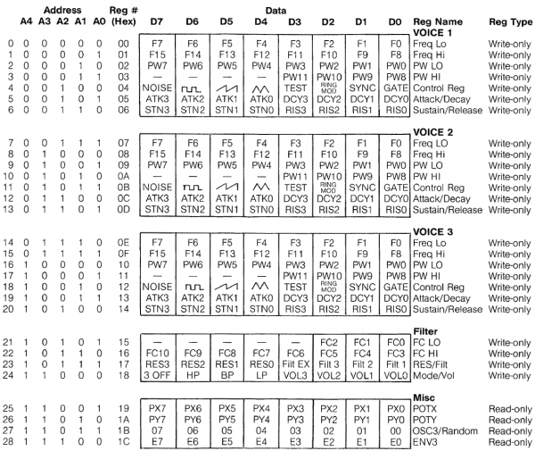

1 The super minimal SID manual
This manual has taken information on wikipedia and from this html page which reproduce the original datasheet1.
For better performance, it is suggested to use an arduino uno as a I2C-connected SID emulator.
1.1 Let's Start
The 6581 Sound Interface Device (SID) is a single-chip, 3-voice electronic music synthesizer/sound effects generator compatible with the 65XX and similar microprocessor families
The SID has been part of the C/64 success.
This arduino emulation library divert Voice2 to another pin, to enable a "Stero" effect somewhat. Connect pin9 and pin 10 to two piezo speaker, and the other side to the ground.
The 6581 consists of three synthesizer “voices” which can be used independently or in conjunction to create complex sounds. Each voice consists of a Tone Oscillator/Waveform Generator, an Envelope Generator and an Amplitude Modulator. The Envelope Generator is controlled via an ADSR (Attack Decay Sustain Release) configuration.
When a mechanical musical instrument produces sound, the Loudness of the sound produced changes over time in a way that varies from instrument to instrument. When a pipe organ's key is pressed, for example, it plays a note at constant volume; the sound dies quickly when the key is released. By contrast, the sound of a guitar is loudest immediately after a string is plucked, and quickly fades.
A synthesizer's ADSR envelope is a way to tailor the timbre for the synth, sometimes to make it sound more like a mechanical instrument. A quick attack with little decay helps it sound more like an organ; a longer decay and zero sustain makes it sound more like a guitar. While envelopes are most often applied to volume, they are also commonly used to control other sound elements, such as filter frequencies or oscillator pitches.
Today modern synthesizers use samples to reproduce sound with a strong accuracy. But in 1982, ADSR was a state-of-the-art for a music chip.
For more information look at http://en.wikiaudio.org/ADSR_envelope
The suggested setup is to have an arduino as a SID, driven via I2C (see examples) The I2C protocol in the example is very easy: send two bytes, one for the register and the second for the value to store inside.

2 How to convert midi files and play them on Stereo Sid
MIDI file are a very old standard which fit more or less in the Sid. MIDI specification is 127 note wide, whereas SID has 94 possibilites. MIDI support a bit more notes. Stereo Sid provide you a midi2Sid function to remap a 8bit Midi note to a 16bit SID register spec. The function will emit a silence for all notes the SID cannot play. SID playable MIDI range is 25-118. To convert it we used the 440hz (A4) center (midi 81, 0x1CD6 on SID).
2.1 Setup
Because SID can generate only 3 voices at a time, you should edit your midi with some program like AriaMaestosa (http://ariamaestosa.sourceforge.net/) to be sure it fits nicely in your SID, i.e. does not use more then three instruments. If you do this step before dumping and exporting, the resulting file fill be easier to play.
2.2 Compile midicsv
Download and compile midicsv from http://www.fourmilab.ch/webtools/midicsv/ Midicsv is a very good tool and will save your day
2.3 Simple approach
A simple approach is to extract 3 tracks from a midi and generate three
simple C source arrays to push in a player sketch.
Midicsv dump the single note like
Track, Time, Note_on_c, Channel, Note, Velocity
Read midicsv manual for more information.
With this command
./midicsv doremifasolasido.mid | egrep ^2 | egrep Note_on_c |cut -d , -f 5,2
you can extract a list of { duration, note } for track 2. We track down only the note start for every track (it is a over-simplification). The key idea is to have three "queue" with a pointer to the current note and a global time counter. after pushing 3 notes, we increment the clock and play the next note when is the right time.
The empire_player.ino demo will show you this in practice.
3 Drums: SID Configuration
Take a look at http://www.lyonlabs.org/commodore/stereo-sid/qlink/half-moon-lake-patches-v1.txt for more ADSR patterns
3.1 Viola/Strings
Waveform: Sawtooth Attack: 9 Decay: 0 Sustain: 12 Release: 8 Release Point: 0
3.2 Pipe Organ
Waveform: Pulse Pulse Width: 2000 Reg 2/3 (12 bit però) PWout = (PWnReg/40.95) % Attack: 3 Decay: 6 Sustain: 6 Release: 3 Release Point 3